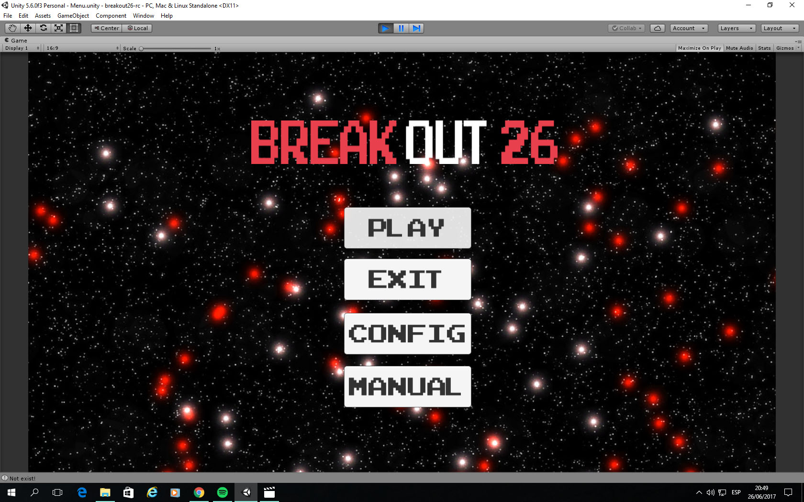
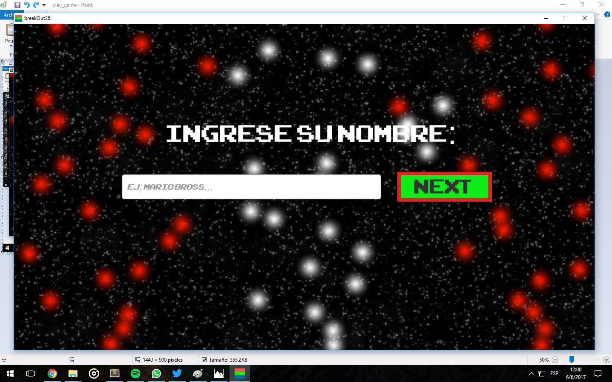
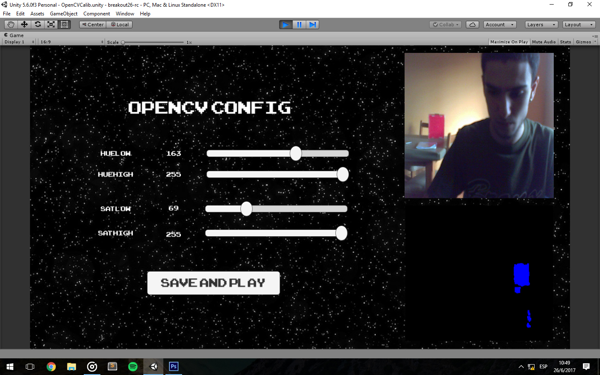
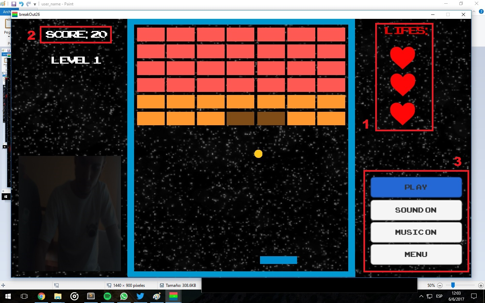

breakout26 (manual de juego)
Instrucciones de juego:
-
Menu: Ahora nos encontramos en el menu del juego, el cual contiene las siguientes opciones: Play, Exit, Config, Manual

-
Ingrese su nombre: El juego cuenta con un registro de usuarios. Itroducen su nombre en la caja de texto y le damos click a "NEXT".

-
OpenCV Config: Las siguientes barras Huelow, Huehigh, Satlow, Sathigh son las que usaremos para detectar el color de nuestro objeto. En el cuadro inferior de esta captura vemos que tiene manchas azules. Esto significa que el color de la caja (rojo) a sido detectado. Podemos usar cualquier color. Sea el color que sea, deben aparecer estas manchas azules, porque son las que representan a nuestro objeto(Mientras mas tomen la forma del objeto mejor funcionara el juego cuando tengamos que mover el paddle).

-
Mover paddle: Como vemos en las animaciones, para poder trasladar al paddle de lugar, debemos mover nuestro objeto (previamente configurado) hacia la izquierda o la derecha, segun la direccion de la bola (Es la que queremos golpear). En caso de que no se mueva nuestro paddle, deberemos checkear bien las configuraciones.
-
Opciones: *1 Tenemos un contador de vidas (lifes) y cuando se acaben perderas el juego. *2 En la parte superior izquierda hay un un contador de scores el cual mostrara tu puntaje con respecto a la cantidad de ladrillos destruidos. *3 En la parte inferior derecha encontraremos un menu:
